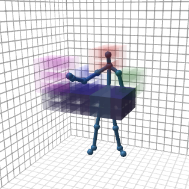
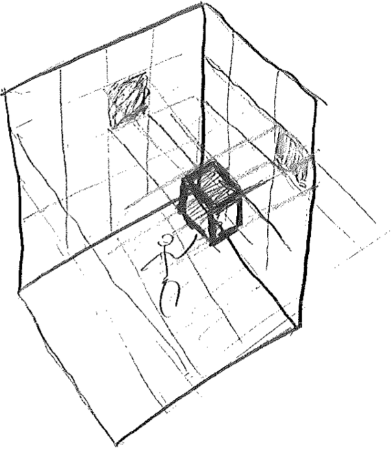
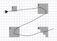
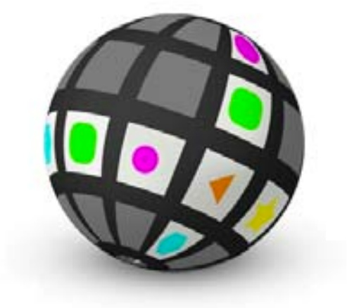

research
artifacts
-

Hotspotizer
Koç University Design Lab (2013–2014)Hotspotizer allows users without computer programming skills to design, visualize, save and recall sets of custom full-body gestures for the Kinect sensor. These gestures are mapped to system-wide keyboard commands which can be used to control any application. Hotspotizer is centered around a novel, easy-to-use graphical interface based on cubic voxels. It is built as an end-to-end, standalone Windows app intended for lay users. A working release of the application and the source code are on GitHub.
-

Readout Automation and GUI for an Experimental μ-cantilever-based MEMS Biosensor
Koç University Optical Microsystems Laboratory (2011)OML's multi-analyte MEMS biosensor uses an array of coated μ-cantilevers that shift their resonant frequencies upon analyte mass accretion, allowing the detection of analyte concentrations. The cantilevers are magnetically actuated and their resonant frequencies are observed via interferometric optical readout. The remote and wireless chip is intended for use within a portable device. I designed and implemented a custom GUI and mechanism for setting up characterization experiments by directly manipulating the position of the chip relative to the laser beam. The system then traverses the μ-cantilever array and collects data without supervision.
-

Workstation for Laser Machining and Additive Manufacturing
Koç University Manufacturing & Automation Research Center (2010)MARC's experimental laser manufacturing workstation is a versatile machine with marking, cutting, engraving and powder sintering capabilities. The workstation utilizes a 10.6 μm CO2 laser coupled to a 3-axis CNC positioning system, as well as a galvo-driven 1064 nm Nd:YAG laser. The machine is controlled via a custom UI and back-end developed in MATLAB, and an Arduino. The software, which I partly developed, also supports toolpath and G-code generation from STL models. The Arduino and peripheral electronics, which I partly designed and realized, receive user input from the software and control the machine's industrial CO2 laser, AC servos, galvanometric scanner and powder sintering bed mechanism. The chassis is designed, mechanically analyzed, fabricated and hand-assembled by a team of three.
publications
-

Mehmet Aydın Baytaş, Tilbe Göksun and Oğuzhan Özcan (2016)
The Perception of Live-sequenced Electronic Music via Hearing and Sight
in Proceedings of the 2016 International Conference on New Interfaces for Musical Expression (NIME 2016) (forthcoming)In this paper, we investigate how watching a live-sequenced electronic music performance, compared to merely hearing the music, contributes to spectators’ experiences of tension. We also explore the role of the performers’ "effective" and "ancillary" gestures in conveying tension, when they can be seen. To this end, we conducted an experiment where 30 participants heard, saw, or both heard and saw a live-sequenced techno music performance recording while they produced continuous judgments on their experience of tension. Eye tracking data was also recorded from participants who saw the visuals, to reveal aspects of the performance that influenced their tension judgments. We analysed the data to explore how auditory and visual components and the performer’s movements contribute to spectators’ experience of tension. Our results show that their perception of emotional intensity is consistent across hearing and sight, suggesting that gestures in “non-instrumental” live-sequencing can be a medium for expressive performance.
-

Mehmet Aydın Baytaş, Yücel Yemez and Oğuzhan Özcan (2014)
Hotspotizer: End-User Authoring of Mid-Air Gestural Interactions
in Proceedings of the 8th Nordic Conference on Human-Computer Interaction (NordiCHI '14)Drawing from a user-centered design process and guidelines derived from the literature, we developed a paradigm based on space discretization for declaratively authoring mid-air gestures and implemented it in Hotspotizer, an end-to-end toolkit for mapping custom gestures to keyboard commands. Our implementation empowers diverse user populations – including end-users without domain expertise – to develop custom gestural interfaces within minutes, for use with arbitrary applications.
-

Mehmet Aydın Baytaş (2014)
End-User Authoring of Mid-Air Gestural Interactions
master's thesis submitted to the Koç University Graduate School of Social Sciences and HumanitiesDevices that sense the alignment and motion of human limbs via computer vision have recently become a commodity; enabling a variety of novel user interfaces that use human gesture as the main input modality. The design and development of these interfaces requires programming tools that support the representation, creation and manipulation of information on human body gestures. Following concerns such as usability and physical differences among individuals, these tools should ideally target end-users and designers as well as professional software developers. This thesis documents the design, development, deployment and evaluation of a software application to support gesture authoring by end-users for skeletal tracking vision-based input devices. The software enables end-users without programming experience to introduce gesture control to computing applications that serve their own goals; and provides developers and designers of gestural interfaces with a rapid prototyping tool that can be used to experientially evaluate designs.
-

Mehmet Aydın Baytaş, Yücel Yemez and Oğuzhan Özcan (2014)
User Interface Paradigms for Visually Authoring Mid-Air Gestures: A Survey and a Provocation
in Proceedings of the Workshop on Engineering Gestures for Multimodal Interfaces (EGMI 2014)Gesture authoring tools enable the rapid and experiential prototyping of gesture-based interfaces. We survey visual authoring tools for mid-air gestures and identify three paradigms used for representing and manipulating gesture information: graphs, visual markup languages and timelines. We examine the strengths and limitations of these approaches and we propose a novel paradigm to authoring location-based mid-air gestures based on space discretization.
-

Oğuzhan Özcan, Ayça Ünlüer, Mehmet Aydın Baytaş and Barış Serim (2012)
Rethinking Spherical Media Surfaces by Re-reading Ancient Greek Vases
paper presented at the ITS'12 workshop Beyond Flat Displays: Towards Shaped and Deformable Interactive SurfacesIn this paper, we propose re-reading of past artifacts and traditions as a possible way to inspire the design of future media on non-flat displays. As an example, we illustrate how different narrative typologies found in ancient Greek vases, circular story reading, bottom-up time reading, abstract and realistic contrast reading and reading in alignment, can yield alternatives to interactive content specific to spherical media. We conclude by pointing out design considerations regarding the composition of graphic elements on spherical surfaces.
reviewer for
- Nordic Conference on Human-Computer Interaction (NordiCHI)
- ACM SIGCHI Symposium on Engineering Interactive Computing Systems (EICS)
awards and scholarships
- Koç University GSSSH (Graduate School of Social Sciences and Humanities) Fellowship (2014–2018)
- TÜBİTAK 1001 Scholarship (2012–2014, grant #112E056)
- Vehbi Koç Scholarship (2010)
- Koç University Merit Scholarship (2007–2012)
- Higher Education Loans and Housing Agency (Yüksek Öğrenim Kredi ve Yurtlar Kurumu) Scholarship (2007–2011)
externally funded projects
as coordinator
- Arçelik A.Ş. (2015-2018): "KUAR: Koç University – Arçelik Research Center for Creative Industries" (₺8.500.000)
as team member with administrative responsibilities
- FP7-PEOPLE-2012-IAPP (2013-2014): “NaMoCap: Natural Motion Capture Process for Creative Industries” (Grant #324333, €658.000)
- TÜBİTAK 1001 (2012-2014): “Specifications on a Design Education Methodology for Gestural Interface Design" (Grant #112E056, ₺188.000)
as researcher
- KoçSistem (2012-2013): "Monitoring & Control Center Touchless Gesture 3D Interactive HMI” (₺110.000)